—Save the Planet, Grow Your Wallet—
RE:SAJ BD is a rural industry and technology-based, community-based and commercially sustainable solution that works to address the growing urban waste management crisis in Bangladesh. Our main goal is to create awareness by incentivizing each household for segregating waste, collection teams arrive on-demand via RESAJ Mobile app, and every material — plastic, food, textile, glass, metal — is converted into sellable products at RESAJ in-house recycling plant.
Our unique strength is the Fusion of Tradition and Technology: rural women artisans create recyclables waste into fashionable products using traditional technique. Biogas generated Energy from food waste powers the entire plant.
Bangladesh urban areas produces thousands of tons of unmanaged waste every day. Over maximum waste going directly to landfills without any processing. Three fundamental failures drive the crisis.
The mixing of putrescible and non-putrescible waste makes recycling nearly impossible and expensive.
Without any financial reward or behavioral awareness, Millions of households across Dhaka have no motivation to change waste habits. Government mandates alone have failed for three decades.
The existing system cannot handle this massive volume of waste.
Dhaka generates an estimated 6,500 tons of waste every day. Dhaka’s only active landfill is overflowing. The untreated waste ends up in the Buriganga and other rivers. As a result, Bangladesh has become one of the leading contributors to global marine plastic pollution — a public health disaster and a disaster for the environment.
Four elegant steps that close the loop — rewarding households, employing collectors, and funding the recycling plant through one integrated system.
Families will use RESAJ color-coded bins. The RE:SAJ app guides them through various tips on proper waste segregation and educates and encourages families to segregate waste at source, making daily waste disposal a habit.
When a bin is full, tap "Request Pickup" in the app. The nearest collector is dispatched in real time. QR scan confirms submission and instantly triggers Green Credit reward.
Transforming the collected waste into valuable resources at RESAJ in-house recycling plant. Every waste stream is processed — plastic shredded and extruded, textiles rewoven on handlooms, food waste converted to biogas powering the whole plant. Zero landfill.
Resaz users can redeem green credits to purchase recycled products, pay for transportation, food, and travel bills at partner merchants — or withdraw directly to cash (BDT) via mobile banking.
Technology, incentives, and craft — an ecosystem no competitor can replicate.
AI-based mobile platform for real-time household waste management
A digital incentive system. The primary behavioral change engine — waste pays
Our greatest competitive strength — unique to RE:SAJ globally
Six waste streams. Six conversion methods. Zero landfill.
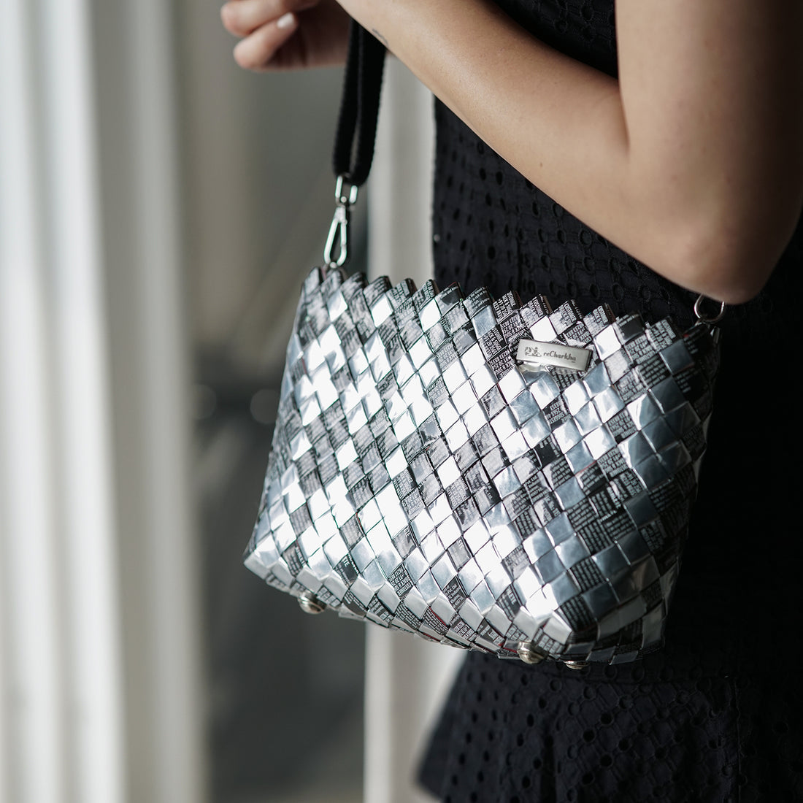
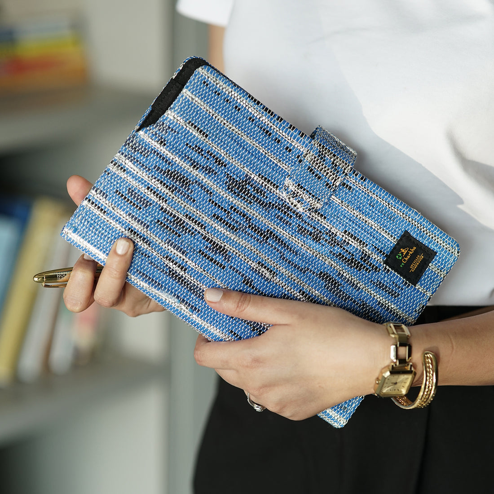
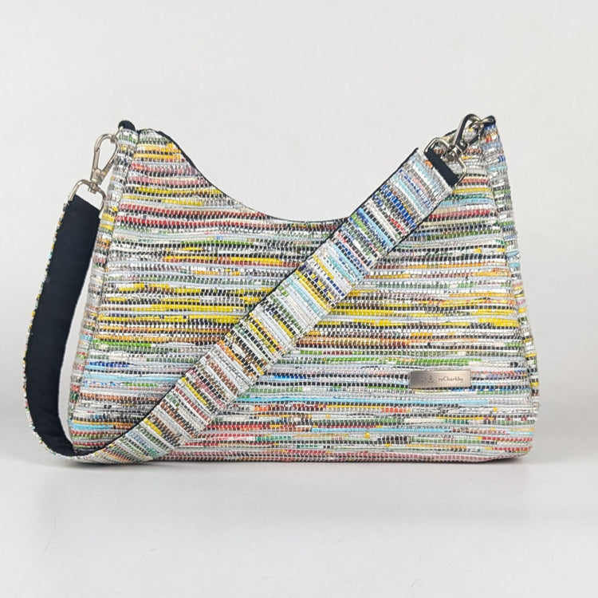
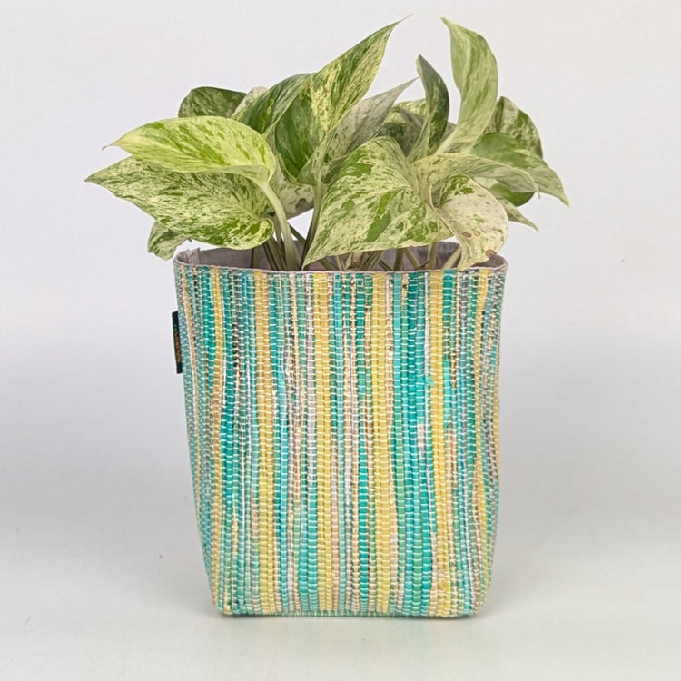
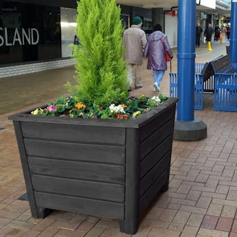
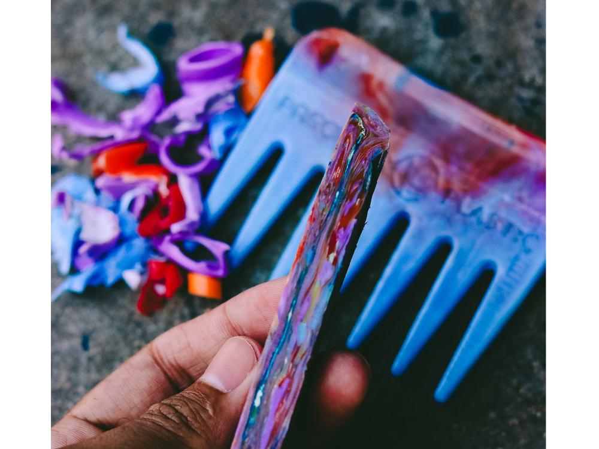
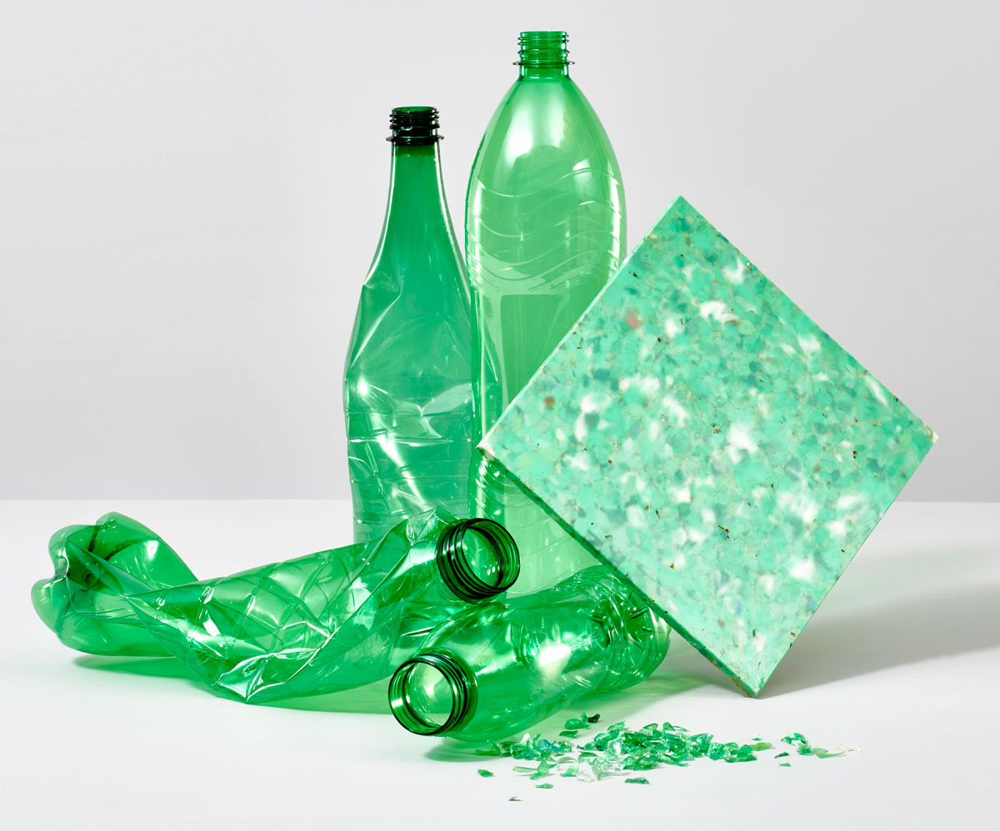
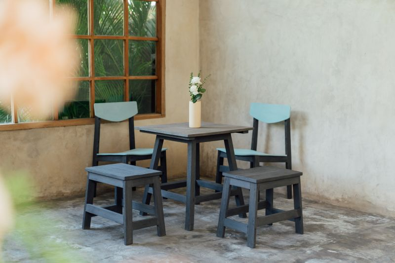
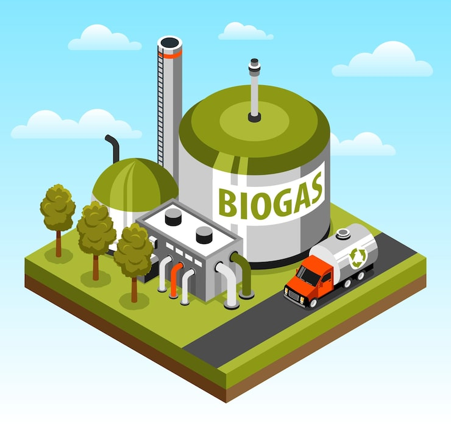
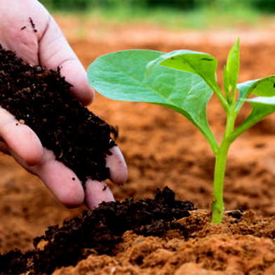
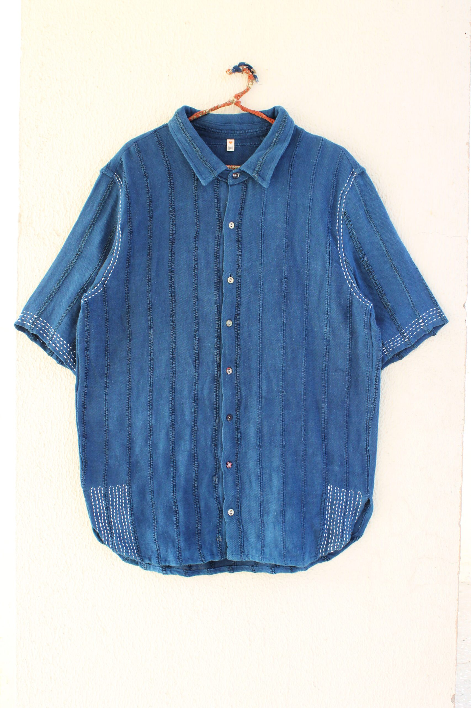
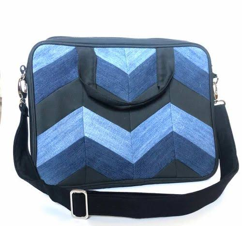
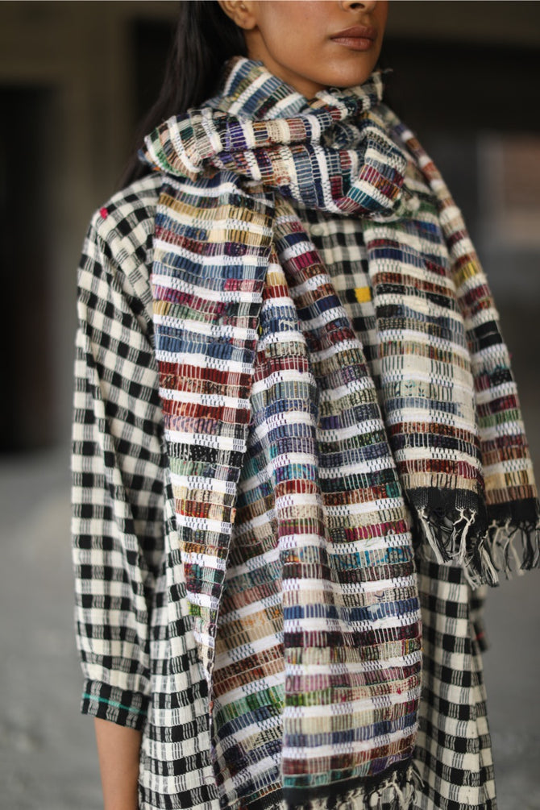
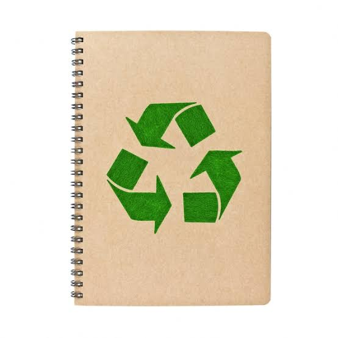
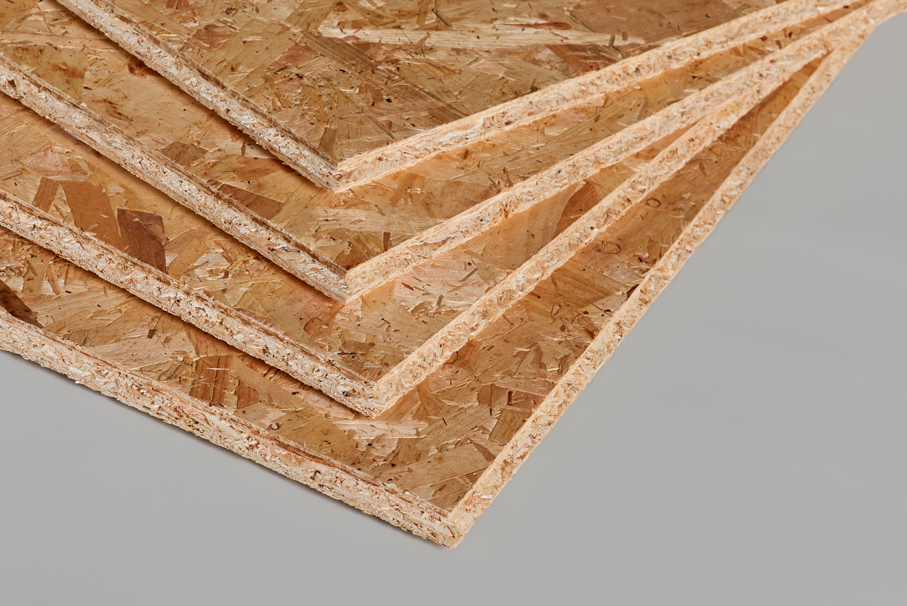
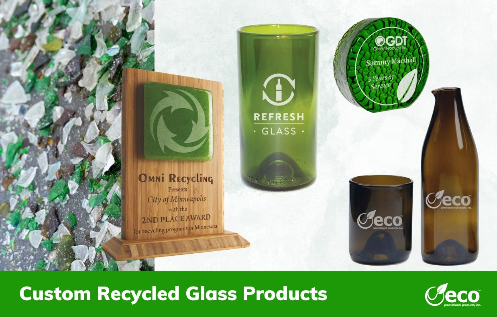
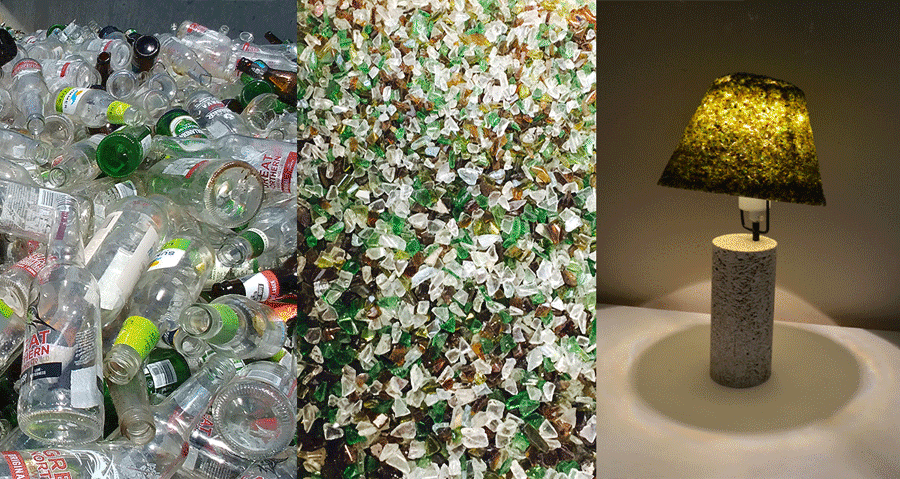
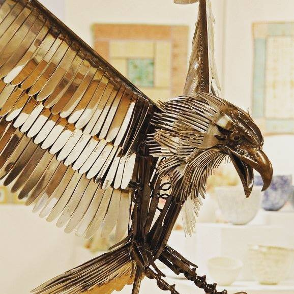
Complete Solution for ecosystem — households, collectors, and administrators seamlessly connected in real time.
For households & families. Track your waste impact, earn Green Credits, shop recycled products, and manage your Green Wallet.
For RE:SAJ collection teams. Accept jobs, navigate routes, scan bins, log waste weight, and track earnings in the field.
Web-based control center. Monitor all KPIs, manage users and collectors, control the Green Credit system, and export policy-grade analytics.
In Bangladesh, no company combines technology, incentives, and rural craft-based recycling in one ecosystem.
No other Bangladeshi company can process Multi-Layer Packaging (chips packets). RE:SAJ's handloom method is the only solution in the country for this toxic, unrecyclable category.
RE:SAJ is the only waste company that pays households to participate via a real digital currency — Green Credits redeemable for goods, services, and cash. No competitor has this.
By generating biogas from food waste to power its own recycling facility, RE:SAJ achieves zero-grid operations — a claim no other waste company in Bangladesh can make.
RE:SAJ operates a diversified revenue model combining direct product sales, service charges, and commission-based partner integrations through the Green Credit network.
Recycled products — eco bags, furniture, clothing, garden planters, tiles, notebooks, home décor — are sold directly to individual consumers via the in-app store and to corporate clients, offices, hotels, and educational institutions via B2B contracts. Each product sold demonstrates proof of circular economy in action.
Primary Revenue SourceUsers can redeem Green Credits on rides with partner transport providers. When a RE:SAJ user books a ride, the transport company pays RE:SAJ a commission percentage. Launching with ride-sharing and public transport integrations across Dhaka, scaling to national bus and train partnerships.
Commission % from Transport PartnersGreen Credits are redeemable at partner restaurants and food outlets. RE:SAJ earns a commission on every transaction made using Green Credits — incentivizing food businesses to promote sustainable consumption, while users enjoy tangible benefits for reducing waste at home.
Commission % from F&B PartnersUsers can redeem Green Credits on travel bookings and hotel stays at partner properties — tourist destinations, eco-resorts, and city hotels. When a RE:SAJ user books through a travel or hotel partner, that partner pays RE:SAJ a commission. This integrates waste management into the broader lifestyle of users while generating scalable passive income.
Commission % from Travel PartnersFive critical investment areas to launch the fully integrated pilot serving 2,000+ families across Dhaka.
Operating a combined B2B and B2C model targeting environmentally conscious families, corporate offices, hotels, restaurants, and educational institutions across Dhaka.
RE:SAJ Bangladesh is more than a waste management company. It is a self-sustaining circular economy, a behavioral change platform, a rural employment engine, and a marine pollution prevention system — all in one. We seek your partnership to build a clean, green Bangladesh.
Ready to invest, partner, or learn more? Reach out to the RE:SAJ founder directly.
We typically respond within 24 hours.